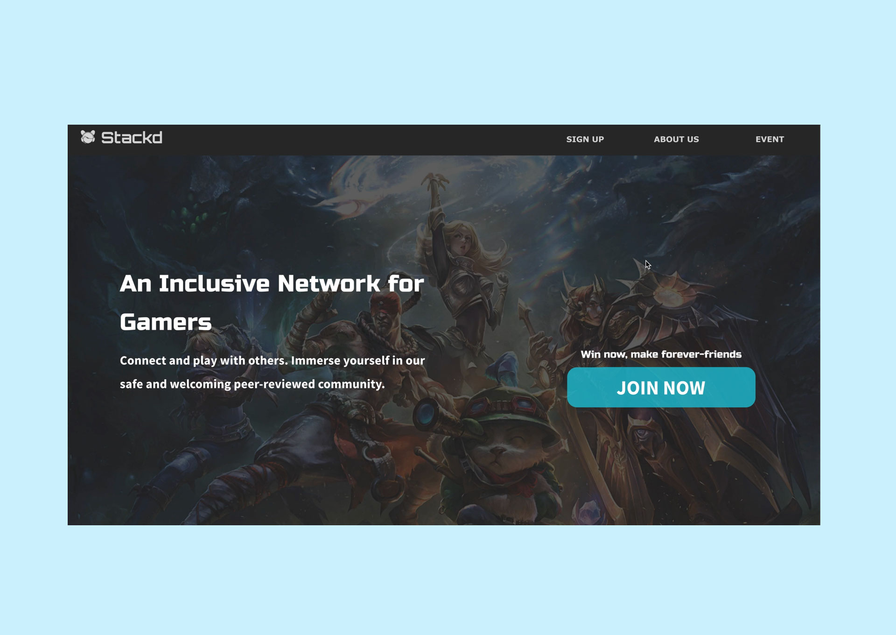
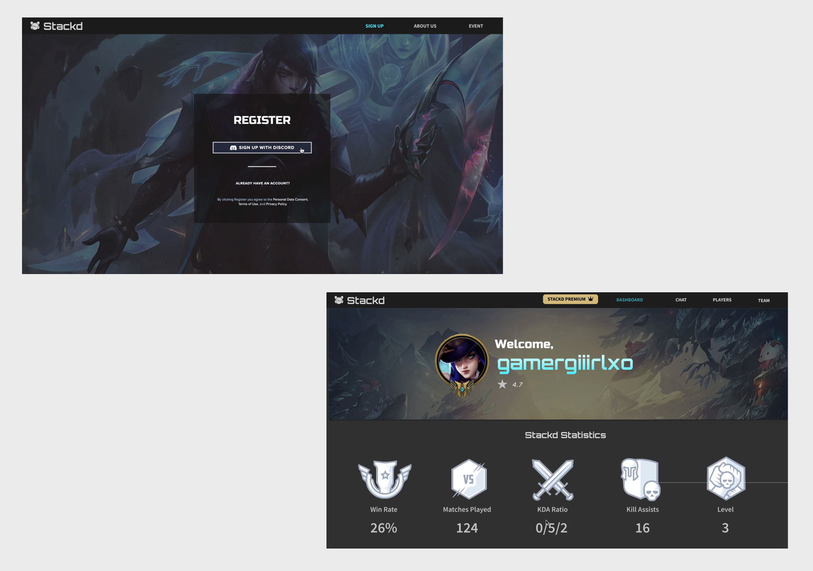
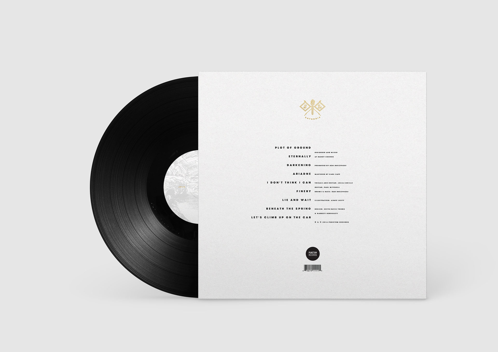

Developed an inclusive esports matchmaking platform to connect competitive gamers. The platform was built with a core focus on closing the gender gap in online multiplayer PC games while creating a safe and welcoming environment for new gamers to find teammates.
Winner of JA Company of the Year.


